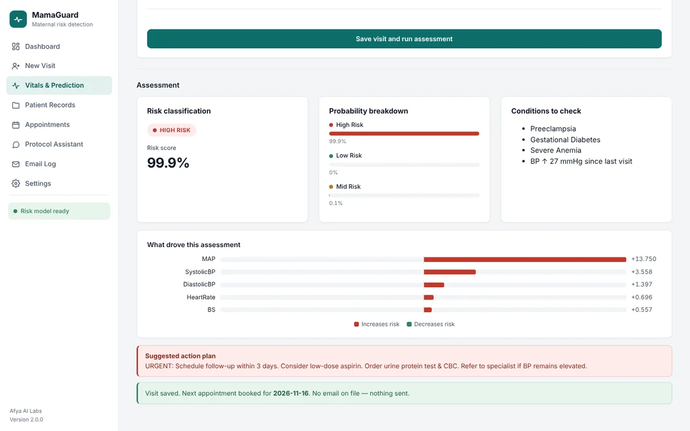

MamaGuard: maternal risk detection and decision support
A decision-support system for antenatal clinics. Nurses enter a mother's vitals and get a risk level with the reasons behind it, the next visit is booked automatically, and staff can ask questions answered only from Kenya's Ministry of Health obstetric protocols.
Design choice: the protocol assistant refuses when the protocols don't cover a question, and dose amounts are never split across text chunks, so it can't quote half a dose.
Python, FastAPI, XGBoost, SHAP, ChromaDB, Llama 3.3 (RAG), SQLite.